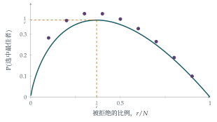

STEP I 2001，第 14 题
继续之前，请先阅读题目（原题为英文）。题目载于 STEP Support Programme 的题目资料库： step.maths.org/questions/01-s1-q14
引子
你正在逐一面试应征者，而且必须即场决定：取录眼前这一位，然后停止；还是永远拒绝这一位，再见下一位。你想要的是最好的那一位。如果太早取录，你很可能错过更好的人；如果等得太久，最好的那一位很可能已经走了。你应该怎样做？
答案是概率（probability）论中最著名的结果之一：先拒绝最初 \(37\%\) 的应征者，然后取录第一位比这些人都好的应征者。这个做法大约有 \(37\%\) 的机会成功，而 \(37\%\) 正是 \(\frac1e\)。本题计算其中的基本概率，而与它配对的 STEP II 2006 题目（见练习）则分析这个策略（strategy）最简单的版本：只拒绝第一位应征者。
动笔之前
在随机次序之下，全体之中最好的应征者落在最先面试的 \(n\) 位之中的概率是多少？
最好的应征者落在 \(N\) 个位置中任何一个的可能性均等，所以概率是 \(\frac nN\)。
逐步解题
阶段 1 最先 \(n\) 位中的最佳者就是全体最佳者
最先 \(n\) 位中的最佳者是全体最佳者，当且仅当全体最佳者在最先 \(n\) 位之中：概率为 \(\frac nN\)。■
阶段 2 最佳或次佳
最先 \(n\) 位中的最佳者是全体次佳者，当且仅当次佳者在最先 \(n\) 位之中而最佳者不在其中。这个概率是多少？
次佳者在最先 \(n\) 位之中的概率是 \(\frac nN\)；在此条件下，最佳者在其余 \(N - 1\) 个位置的其中一个，当中有 \(N - n\) 个位置排在最先 \(n\) 位之后。所以 \[\mathrm{P}(\text{最佳或次佳}) = \frac nN + \frac nN\cdot\frac{N - n}{N - 1}. \qed\] 当 \(N = 4\)，\(n = 2\) 时：\(\frac12 + \frac12\cdot\frac23 = \frac56\)。把最好的两位应征者在四个位置中的排法逐一列出（全部 \(12\) 种有序排法的可能性均等），除了两位顶尖应征者同时落在第 \(3\) 和第 \(4\) 位的 \(2\) 种排法之外，最先两位中的最佳者都是顶尖两位之一：\(\frac{10}{12} = \frac56\)。
阶段 3 最优策略
策略：先拒绝最初 \(r\) 位应征者，然后取录第一位比他们全部都好的应征者。如果最佳应征者在位置 \(k > r\)，这个策略在甚么情况下会选中此人？
设最佳应征者在位置 \(k\)，这个策略选中此人，当且仅当位置 \(r + 1, \ldots, k - 1\) 上没有任何应征者胜过最初 \(r\) 位全部的人，即是说，最先 \(k - 1\) 位应征者中的最佳者在最初 \(r\) 位之中。根据第 1 阶段（把 \(N\) 换成 \(k - 1\)），这件事的概率是 \(\frac{r}{k - 1}\)。最佳应征者落在每个位置 \(k\) 的概率都是 \(\frac1N\)，所以 \[\mathrm{P}(\text{成功}) = \frac1N\sum_{k=r+1}^{N}\frac{r}{k - 1} = \frac rN\Bigl(\frac1r + \frac{1}{r + 1} + \cdots + \frac{1}{N - 1}\Bigr).\]
当 \(N\) 很大时，记 \(x = \frac rN\)。这个和大约等于 \(\ln\frac{N}{r}\)。\(x\) 取甚么值时 \(x\ln\frac1x\) 达到最大？
成功的概率大约是 \(x\ln\frac1x\)。求导可得，\(\ln\frac1x - 1 = 0\) 于 \(x = \frac1e\) 时成立，而最大值是 \(\frac1e \approx 0.368\)（图 12.12.1）。

回顾
位置的对称性。在随机次序之下，每位应征者落在任何位置的可能性均等，由此立即得出 \(\frac nN\)。
以最佳者的位置为条件。计算策略的成功概率时，我们以最佳应征者所在的位置为条件分情况处理。
求和变成积分。当 \(N\) 很大时，调和和（harmonic sum）变成了对数，再经一次求最大值便得出 \(\frac1e\)。
背后的数学
最优停止
秘书问题（secretary problem）是最优停止（optimal stopping）的奠基例子：根据随时间陆续到来的信息，决定何时采取行动，以使期望回报最大。可以证明，在所有策略之中（而不只是“先拒绝 \(r\) 位，然后取录下一位至今最佳者”这一类），这种阈值规则（threshold rule）是最优的，论证的方法是由最后一位应征者开始向前逆推。同样的数学也决定了何时卖出股票、何时行使金融期权，以及应该花多久去找泊车位。一个值得注意的特点是，在极限之下答案与 \(N\) 无关：不论应征者有一百位还是一百万位，你成功的概率都是 \(\frac1e\)。
各种变化
如果你只要选中顶尖两位应征者的其中一位便满意，最佳策略大约有 \(57\%\) 的机会成功。如果你想做到的不是使选中最佳者的机会最大，而是使所选应征者的期望名次最优，最优策略便复杂得多，而期望名次趋向大约 \(3.87\)（Chow、Moriguti、Robbins 和 Samuels，1964）。如果你有一定的概率可以回头召回已被拒绝的应征者，又或者你知道应征者分数的分布（即“完全信息”问题），答案又会不同。练习中的雪糕题是最简单的情形：只拒绝一个，然后取下一个比它好的。
这个问题在 1950 年代流传于数学家之间，马丁·加德纳（Martin Gardner）于 1960 年以“googol 游戏”之名把它普及开来（在纸条上写下数字；你的对手逐张翻开，并且必须在最大的那个数出现时停下）。Thomas Ferguson 的文章“Who solved the secretary problem?”（1989）追溯了它错综复杂的历史；有一种说法指，天文学家开普勒（Johannes Kepler）在 1611 年挑选第二任妻子时，会见了十一位人选，最后向第五位求婚。
思维技巧
当最佳策略未知时，考虑一族带有参数的自然策略，把成功概率写成该参数的函数，然后求最优。
在大学里，这种方法用于决策论、博弈论和统计学。要证明这一族之中的最佳策略就是全体之中的最佳策略，是更困难也更有趣的一步，通常要用逆向归纳法（backward induction）来完成。
延伸练习
雪糕。试做 STEP II 2006，第 13 题：这是秘书问题的小型版本，规则很简单。拒绝第一个，然后取第一个胜过它的。
较小的 \(N\)。当 \(N = 4\) 时，求 \(r\) 的最佳值和成功的概率。用列举法验算。
最佳或次佳。利用第 (ii) 部分，论证“最先 \(n\) 位中的最佳者是顶尖两位之一”的可能性远高于“最先 \(n\) 位中的最佳者就是最佳者”。这对于选中顶尖两位之一的策略有甚么启示？
精确的最大值。当 \(N = 10\) 时，从图中验证 \(r = 3\) 是最优的。当 \(N = 100\) 时，证明 \(r = 37\) 是最优的（准确至四位小数，\(r = 36\)、\(37\)、\(38\) 的成功概率分别是 \(0.3710\)、\(0.3710\)、\(0.3708\)）。
延伸阅读
Thomas Ferguson，“Who solved the secretary problem?”，Statistical Science 4（1989）。历史与各种变化；可在网上免费阅读。
Brian Christian & Tom Griffiths，Algorithms to Live By（William Collins）。把最优停止及其他算法应用于日常决策。
Martin Gardner，New Mathematical Diversions（Mathematical Association of America）。googol 游戏。